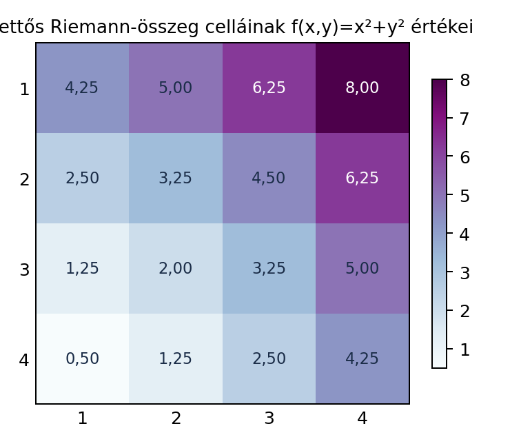

Az egyváltozós integrállal a görbe alatti területet közelítettük úgy,
hogy az intervallumot kis részekre osztottuk, és minden részen
téglalapokat állítottunk. Két változós függvénynél hasonló a helyzet,
csak most a grafikon, a
felület alatti térfogatot szeretnénk meghatározni az
-sík
egy téglalapja felett.
Képzeljük el például, hogy egy
-es
parkolóban megmértük a frissen esett hó vastagságát. A hóvastagság
pontról pontra változik: legyen
centiméterben. A hó összmennyisége (térfogata) nem számítható egyszerűen
„átlagos vastagság szorozva területtel”, mert az átlagot éppen az
integrál segítségével kell pontosan definiálnunk. A kettős integrál erre
ad eszközt.
25.1.2 Szemléletes kép
A
téglalapot osszuk fel
egyforma cellára; minden cella mérete
,
területe
.
Ha minden cellában a jobb felső sarkában vett függvényértéket
választjuk, akkor a
függvényre az alábbi értékeket kapjuk.

A kettős Riemann-összeg celláinak
f(x,y)=x²+y² értékei - A (0,2)×(0,2) téglalap 4×4-es felosztása; minden
cellában a jobb felső sarokban vett érték. A cellák Δx=Δy=0,5. A mátrix
sorai felülről lefelé az y=2,0; 1,5; 1,0; 0,5 értékekhez tartoznak, az
oszlopok balról jobbra az x=0,5; 1,0; 1,5; 2,0 értékekhez.
A hőtérkép színskálája mutatja, hogy a függvényérték a jobb felső
sarok felé növekszik. Ha minden cella fölé
magasságú hasábot állítunk, akkor egy-egy hasáb térfogata
,
az összeg pedig a keresett térfogat egy közelítése. Ezt nevezzük kettős
Riemann-összegnek.
A
-es
felosztásnál a cellaértékek összege
,
így a kettős Riemann-összeg
.
Az alábbi ábra mutatja, mi történik finomításkor: jobb felső sarkokkal
mellett az összeg
,
mellett
,
és
esetén a pontos
értékhez tart; a cellák középpontjával már
mellett is
adódik.
Statikus változat (mint a PDF-ben)
A kettős Riemann-összeg a felosztás finomításával az
integrálhoz
()
tart
25.1.3 Definíciók
Legyen
Osszuk fel az
intervallumot
részre:
a
intervallumot pedig
részre:
Jelölje
és
.
A felosztáshoz tartozó cellák:
területük pedig
Minden cellában válasszunk egy közbülső pontot:
A kettős Riemann-összeg:
A felosztás finomságát a cellák átlóinak maximumával
mérjük:
Definíció (kettős Riemann-integrál). Azt mondjuk,
hogy az
függvény Riemann-integrálható az
téglalapon, ha létezik olyan
valós szám, amelyre igaz: minden
-hoz
van olyan
,
hogy bármely
finomságú felosztásra és tetszőleges közbülső pontválasztásra
Ekkor az
számot
kettős integráljának nevezzük, és
módon jelöljük. A
betű a „területelemre” utal; téglalap esetén
vagy
.
Tétel (folytonos függvény integrálhatósága). Ha
folytonos a zárt
téglalapon, akkor
Riemann-integrálható
-en.
Bizonyítási vázlat. Az egyváltozós esethez hasonlóan
definiáljuk az alsó és felső összegeket is: minden cellában az
minimumával, illetve maximumával számolunk. A zárt téglalap kompakt,
ezért
egyenletesen folytonos; így elegendően finom felosztásnál a
függvényértékek ingadozása minden cellában kisebb egy előírt
-nál.
Ebből a felső és alsó összeg különbsége
alá szorítható, tehát a két összeg közös határértéke létezik. A
részletek az egyváltozós bizonyítás értelemszerű kiterjesztései.
25.1.4 A Fubini-tétel
A definícióból nehézkesen számolnánk, mert kétdimenziós felosztást és
határértéket kellene kezelni. A Fubini-tétel szerint folytonos
függvényre a kettős integrál két egymás utáni egyváltozós
integrállal számítható: először az egyik változó szerint
integrálunk, miközben a másikat állandónak tekintjük, majd az eredményt
a másik változó szerint integráljuk.
Tétel (Fubini-tétel folytonos függvényre). Legyen
folytonos a
téglalapon. Ekkor
A belső integrálás során a másik változót konstansként kezeljük.
Bizonyítási vázlat. A gondolat a Riemann-összeg
csoportosítása. Legyen az
-szerinti
felosztás
,
az
-szerinti
.
Válasszunk minden
-cellában
egy
pontot, minden
-cellában
egy
pontot, és legyen a kettős Riemann-összegben
,
.
Ekkor
Rögzített
mellett a belső összeg,
az egyváltozós
függvény Riemann-összege a
intervallumon. Ha az
-felosztás
finomsága nullához tart, ez az összeg a
integrálhoz tart. Így a teljes kettős Riemann-összeg az
Pontosabban:
a kompakt
-en
egyenletesen folytonos, ezért minden
-hoz
van olyan
,
hogy
esetén minden
-re
,
így
.
Mivel
folytonos,
is folytonos, ezért az utóbbi összegek határértéke
.
A kettős integrál definíciója szerint a kettős Riemann-összegek
határértéke ugyanaz, függetlenül a közbülső pontok választásától,
tehát
A másik sorrend szimmetrikus okokból adódik. (A vázlat vége.)
Megjegyzés. A tételt gyakran úgy is írjuk, hogy
ahol a belső integrál jele és a hozzá tartozó differenciál mindig a
belső határokkal együtt olvasandó. A zárójelezés segít elkerülni a
félreértést.
A Fubini-tétel gyakorlati jelentése, hogy a kettős integrált
iterált integrállal számoljuk: először a belső
egyváltozós integrált keressük meg, majd a kapott függvényt a külső
határok között integráljuk.
Számolási recept: kettős integrál téglalapon iterált
integrállal.
Írd fel a téglalapot
alakban.
Válaszd ki az első integrálási változót, például
-t;
ekkor
-et
állandónak tekintjük.
Számítsd ki a belső integrált:
.
Az eredmény általában
-et
tartalmaz.
Integráld
-et
-tól
-ig:
.
Ellenőrzésképpen cseréld fel az integrálási sorrendet: a
végeredménynek ugyanannak kell lennie.
Példa 1. Számítsuk ki a
integrált.
Megoldás. Írjuk fel iterált integrálként, először
szerint integrálva:
A belső integrálban
konstans:
Ezután a külső integrál:
Ellenőrzés. Más sorrendben:
A belső integrál:
A külső:
A két eredmény megegyezik.
Példa 2 (szorzat alakú integrandus). Legyen
a
téglalapon. Számítsuk ki a kettős integrált.
Megoldás.
A belső integrálban
kiemelhető:
A külső:
Itt a szorzat alakú integrandus miatt a kettős integrál szorzatként
is írható:
Ez a téglalapon konstans határokkal mindig így van, ha
:
25.1.6 Átlagérték téglalapon
Az egyváltozós integrálhoz hasonlóan a kettős integrállal
definiálható a függvény átlagos értéke egy téglalapon.
Definíció (átlagérték). Legyen
folytonos a
téglalapon. Ekkor
átlagértéke
-en:
ahol
a téglalap területe.
A fogalom jelentése: ha a
felület alatti térfogatot egyenletesen elkennénk a téglalap területén,
éppen
magasságú hasábot kapnánk.
25.1.7 Valós életbeli
alkalmazás
Térjünk vissza a hó mennyiségének kérdésére. Legyen a parkoló a
téglalap méterben mérve. Tegyük fel, hogy a hóvastagság
centiméterben:
ahol a koordináták méterben értendők. (Ez a modell azt feltételezi,
hogy a hó a
sarokban a legvastagabb
(
cm, például szél hordta torlasz), és a szemközti sarok felé
cm-ig vékonyodik.) A hó össztérfogata:
Először a belső,
szerinti integrált számítjuk:
Így a belső integrál értéke:
Most jön a külső,
szerinti integrál:
Kiszámolva:
tehát
Ezt köbméterre váltva:
,
ezért
A parkoló területe
,
így az átlagos hóvastagság:
A modell értelmezése és korlátai. A számítás azt
mutatja, hogy a parkolón összesen körülbelül
hó van, és az átlagos vastagság
cm. A modell folytonos hóvastagságot feltételez, ami a valóságban csak
közelítés: a hó szél hatására torlaszolódhat, a mérési pontok száma
véges, és a függvényt mérésekből kellene illeszteni. A kettős integrál
ennek ellenére pontosan definiálja a „térfogat” fogalmát, és a modell
finomításával a számítás ugyanezen elven működik.
25.1.8 Tipikus hibák
A belső integrál határainak felcserélése. Ha a
külső integrál
szerint van
-n,
akkor a belső integrál határait
szerint
-n
kell írni, és a belső differenciál
vagy
legyen összhangban. Az
jelölésben a legbelső integrál
szerinti.
A belső integrál eredményéből a másik változó
elhagyása. Például
,
nem
.
A belső integrál általában függ a kívül maradt változótól.
A szorzat alakú integrandus hibás
szétválasztása. A
képlet csak akkor igaz, ha a határok konstansok. Ha a határok változókat
tartalmaznak, a szorzat nem bontható szét ilyen egyszerűen; ezt a Kettős integrál normáltartományon alfejezetben
tárgyaljuk.
Az átlagértéknél a területtel való osztás
elfelejtése. Az átlag
;
pusztán az integrál kiszámítása még nem átlag.
A cellaterület
vagy
alakban való használata. A téglalap cella területe mindig
.
25.1.9 Önellenőrzés
Írd fel a
téglalapon vett kettős integrált két különböző sorrendű iterált
integrállal.
Mi a feltétele annak, hogy a Fubini-tétel az itt tanult alakban
alkalmazható legyen?
Ha
az
téglalapon, akkor mennyi a kettős integrál?
Igaz-e, hogy
mindig egyenlő
értékével, ha
folytonos?
Ha
és
,
akkor mennyi
?
25.1.10 Feladatok
1. feladat (A). Számítsd ki a
integrált.
2. feladat (A). Számítsd ki a
integrált.
3. feladat (B). Számítsd ki a
integrált, és ellenőrizd a szorzat alakú integrandus képletével.
4. feladat (B). Cseréld fel az integrálási
sorrendet, és számítsd ki mindkét módon:
5. feladat (C). Bizonyítsd be: ha
folytonos a
téglalapon és
minden
pontban, akkor
.
6. feladat (D). Egy
-es
területen a hóvastagság
cm, ahol a koordináták méterben vannak. Számítsd ki a hó térfogatát
köbméterben és az átlagos hóvastagságot centiméterben.
25.1.11 Megoldások
Önellenőrzés – válaszok
és
.
-nek
folytonosnak kell lennie a zárt
téglalapon.
,
,
így
.
Igen, folytonos
esetén a Fubini-tétel szerint.
.
1. feladat (A).
A belső integrál:
A külső:
Ellenőrzés. Más sorrendben:
a belső:
a külső:
2. feladat (A).
A belső integrál:
A külső:
3. feladat (B).
A szorzat alakú képlettel:
Iteráltan ugyanez adódik.
4. feladat (B).
Először az adott sorrendben:
A belső:
A külső:
Most felcserélt sorrendben:
A belső:
A külső:
5. feladat (C).
Legyen
tetszőleges felosztás. Mivel
minden cellában, bármely közbülső pontválasztásra
hiszen nemnegatív számok összege nemnegatív. A kettős integrál ezen
Riemann-összegek határértéke. Ha létezik olyan
,
akkor válasszunk
-t;
a definíció szerint elegendően finom felosztásra minden Riemann-összeg
sugarú környezetébe esik, ami negatív lenne, de a Riemann-összegek
nemnegatívak. Ez ellentmondás, tehát
.
∎
6. feladat (D).
A terület
méterben. A hó térfogata:
A belső integrál:
Így a belső:
A külső:
Kiszámolva:
Átváltva:
.
A terület
,
így az átlagos hóvastagság:
Az ellenőrzéshez: a hóvastagság a
sarokban
cm, a
sarokban
cm, középen
()
cm; a 24,45 cm-es átlag e határok között van.
25.1.12 Rövid összefoglaló
Legyen
téglalap. A kettős Riemann-integrál definíciója a
cellákra bontott téglalapon vett Riemann-összegek határértéke. A cella
területe
.
Ha
folytonos a zárt
téglalapon, akkor
kettős integrálja létezik. A Fubini-tétel szerint
folytonos
-re
a kettős integrál két egyváltozós integrállal számolható:
A belső integrálásnál a másik változót állandónak tekintjük. Ha az
integrandus szorzat alakú,
,
akkor